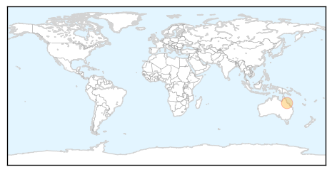

Ebola
30-Day Web Trend
0 alerts, 0 warnings

30-Day Twitter Trend
1 alerts, 0 warnings

Article Locations

Article Confidences
Top Articles:
- 1.000
- Liberia investigating animal link after Ebola re-emerges
- 1.000
- FG Calls for Vigilance as Ebola Virus Resurfaces in Liberia, Articles
- 1.000
- UPDATE 3-Liberia investigating animal link after Ebola re-emerges
- 1.000
- Liberia investigating animal link after Ebola re-emerges
- 1.000
- Where Did New Cases Come From?
- 1.000
- Liberia's new Ebola cases rattle neighboring Sierra Leone, Guinea
- 1.000
- Ebola back in Liberia 2 months after being declared free of virus that killed over 11,000
- 1.000
- Ebola in Liberia: Two More Cases Confirmed as Rumors of Second Patient Zero Spread
- 1.000
- Liberia confirms three new Ebola cases, raising fears of remaining hidden pockets of the disease
- 1.000
- Liberia investigating animal link after Ebola re-emerges
- 1.000
- Liberia traces contacts as 3rd case arises from town
- 1.000
- Liberia finds second Ebola case, raising fears of resurgence
- 1.000
- Ebola return in Liberia underscores need for rigorous testing
- 1.000
- Officials in Liberia Say Ebola Has Returned After Teenager Died
- 0.999
- Third New Ebola Case Hits Nation That Only a Few Weeks Ago Declared Relief
- 0.999
- Liberian Ebola aid workers demand hazard pay
- 0.999
- Malaria killed more people than usual in Ebola outbreak
- 0.999
- Liberia announces two more confirmed Ebola cases
- 0.999
- New Ebola cases in Liberia raise fears of fresh outbreak
- 0.999
- Further setback for weary - and shellshocked - Liberia as announces two more confirmed Ebola cases
- 0.999
- Ebola: FG Urges States, Health Facilities To Be On Alert
- 0.998
- Liberia Traces Contacts in 3rd New Ebola Case
- 0.998
- Reflections Of A Grinder
- 0.998
- Kenya : Liberia announces two more confirmed Ebola cases
- 0.998
- 2nd Ebola case declared in Liberia as health workers protest
- 0.998
- Ebola: Two more cases confirmed in Liberia
- 0.998
- 2 New Ebola Cases in Liberia
- 0.998
- Liberia confirms third Ebola case
- 0.998
- 1 dead after Ebola reappears in Liberia
- 0.998
- Kizz MyAnthia Blog Archive The Epidemic May be Over, But Liberia Has New Ebola Cases
- 0.997
- Liberia finds two Ebola cases weeks after being declared free of it
- 0.997
- Liberia confirms third Ebola case
- 0.997
- 2nd Ebola case declared in Liberia as health workers protest
- 0.997
- Liberia confirms third Ebola case
- 0.997
- Liberian leader says new Ebola outbreak can be contained
- 0.996
- HHS Launches National Ebola Training Center -- Occupational Health & Safety
- 0.996
- Ebola in Liberia: Be on alert, FG tells health ministries
- 0.996
- To Protect Liberia’s Borders from Ebola Spill,
- 0.996
- FG urges Vigilance As Ebola Resurfaces In Liberia
- 0.996
- Liberia investigating animal link after Ebola re-emerges
- 0.995
- Congo and WHO investigate possible Ebola outbreak
- 0.994
- Third Ebola case in Liberia.
- 0.994
- Liberia announces fresh Ebola death
- 0.994
- Ebola returns to Liberia weeks after country declared free of virus 02/07/2015
- 0.993
- Liberian Teen Tests Positive For Ebola, More Than 100 Came In Contact
- 0.993
- After Liberia Declared 'Ebola-free,' New Cases Reported
- 0.992
- After Liberia Declared 'Ebola-free,' New Cases Reported
- 0.992
- Congo and WHO investigate possible Ebola outbreak
- 0.991
- Working together against a common enemy
- 0.983
- The Liberian Observer
Showing top 50 articles...
Top Tweets:
- 0.991
- Ebola diaries: Making things work in a desperate situation - World Health Organization http://t.co/KD9IL8BVSg ebola EVD
- 0.990
- TWU student is researching Ebola virus - Gainesville Daily Register http://t.co/uFbYUYwkHn ebola EVD
- 0.973
- Congo and WHO investigate possible Ebola outbreak - Reuters http://t.co/D1ISEh48Ca ebola EVD
- 0.966
- Liberia fears a new Ebola epidemic after second case is discovered - Quartz http://t.co/kKOcyNUA24 ebola EVD
- 0.944
- Canadian military medical staff end six-month Ebola mission in Sierra Leone - The Province http://t.co/UL32uFpv0T ebola EVD
- 0.905
- .@WHO has very said little about the return of Ebola to Liberia. But clearly taking it seriously - Ebola Emergency Committee convened today
- 0.894
- Ebola, economy to blame for fewer tourists - News24 http://t.co/QyrocWN78m ebola EVD
- 0.894
- Ebola, economy to blame for fewer tourists - News24 http://t.co/AoXyIUHCyE ebola EVD
- 0.884
- RT: The Ebola outbreak in West Africa highlighted the crucial frontline role of effective laboratories WHOPanorama http://t.c…
- 0.852
- Viral protein in their sights: Advanced imaging reveals key structure of Ebola . http://t.co/RjkhWvJegp ebola EVD
- 0.851
- Liberia investigating animal link after Ebola re-emerges - Reuters http://t.co/Ye3wxqsg3o ebola EVD
- 0.823
- RT: New Ebola outbreak has been localized in Nelowehn Community, Mamba Kaba District - Nyenswah http://…
- 0.821
- There are now two live cases of Ebola in Liberia, after Sunday's death. Our updated feature from the affected area: http://t.co/bJ3NeBKGhx
- 0.788
- In Liberia: Dog meat identified as possible source of Ebola - http://t.co/R0E8xxaP9m http://t.co/XVzskgQKQg ebola EVD
- 0.769
- Lutter contre la propagation du virus Ebola au Mali http://t.co/Nb3QFPJQjX
- 0.728
- RT: Liberia was Ebola free for seven weeks, on Sunday a teenager died of the virus, now two more from his village have it http:/…
- 0.715
- Liberia fears a new Ebola epidemic after second case is discovered - Quartz http://t.co/Q9TMJ5vp2C
- 0.713
- As Liberia's Ebola cluster grows, cases continue elsewhere http://t.co/xmjxslEEtg
- 0.707
- UNMC announced as national Ebola training and education center - Kearney Hub http://t.co/dEFPpXERlO ebola EVD
- 0.688
- Sierra Leone's Rich and Powerful Are Breaking the Ebola Burial Rules http://t.co/8XG3rHWqK7 via
- 0.686
- Ebola, ritorna l'incubo in Liberia: tre nuovi casi nello stesso villaggio http://t.co/9mY48TQFbV via
- 0.678
- 10000 Monitored for Ebola in US Over Fall & Winter - Live Science http://t.co/3P8s3dKOzf ebola EVD
- 0.677
- RT: NEWS SCAN: MERS in South Korea, Saudi MERS cases, H5N1 in Egypt, US Ebola monitoring http://t.co/JVA5fMwt6z
- 0.643
- RT: As Liberia's Ebola cluster grows, cases continue elsewhere http://t.co/xmjxslEEtg
- 0.639
- Avec le retour d’Ebola au Libéria le Chef d’UNMEER plaide pour la rigueur dans les tests de dépistage https://t.co/qMhCzRfkXc
- 0.629
- La Grande Finale Africa Stop Ebola aura lieu le 29 juillet au Palais du Peuple de Conakry ! Nous vous présentons... http://t.co/bqNgLLHZ21
- 0.610
- Liberia confirms 2 live Ebola cases, both males in their 20s, after one death, bringing total from new cluster to 3. 175 contacts so far.
- 0.590
- AFD Blog ` @ECDC_EU Assessment Of West Africa’s Ebola Epidemic – July 1st' http://t.co/twKf2Rw7Wz
- 0.589
- Liberia. How Come? Ebola http://t.co/9h8s499iiS via
- 0.564
- RT: Ebola: @ILO explains how decent work in the health sector saves lives of health personnel http://t.co/TujihQ5ZU5 EbolaResponse
- 0.560
- .@nprGlobalHealth No. Has issued a release on the Ebola Emergency Committee meeting yet?
- 0.556
- .@MarkianHawryluk DRC has a lot of experience with VHFs - 6 previous Ebola outbreaks & a Marburg outbreak. http://t.co/RMq2qAZm6p
- 0.549
- Could Liberia's new Ebola cluster be tied to animal meat consumption? Infectious disease expert weighs in http://t.co/bJ3NeBKGhx
- 0.540
- Officials Confirm Ebola's Return to Liberia http://t.co/Zy98T54sSr
- 0.521
- Shizuoka man returning from Guinea with fever tests negative for Ebola but has ... - The Japan Times http://t.co/2k4mAqGPLl
- 0.513
- Musings on how a 17 yr old Liberian became infected with Ebola weeks after transmission there supposedly stopped. https://t.co/waiPAyTKXk
- 0.502
- Chlorine buckets are reappearing outside shops and homes in Monrovia. People seem intent on vigilance, but calm. Liberia Ebola
Chikungunya
30-Day Web Trend
0 alerts, 0 warnings

30-Day Twitter Trend
0 alerts, 0 warnings

Article Locations
Article Confidences

Top Articles:
Top Tweets:
-
No tweets found for Jul 02, 2015